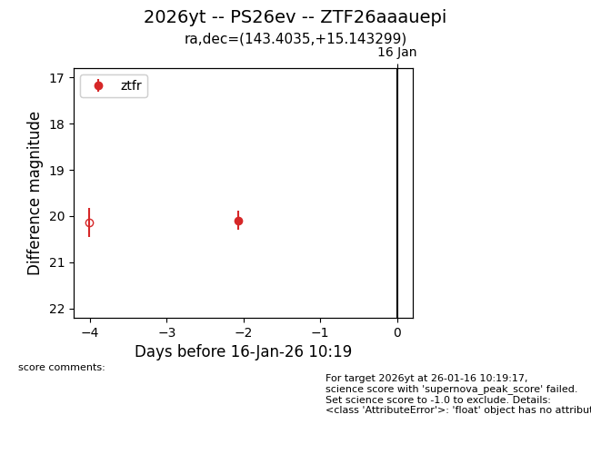
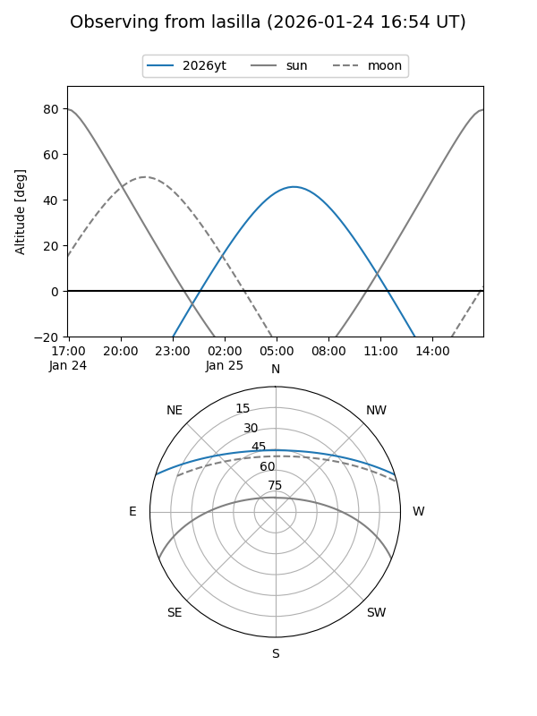
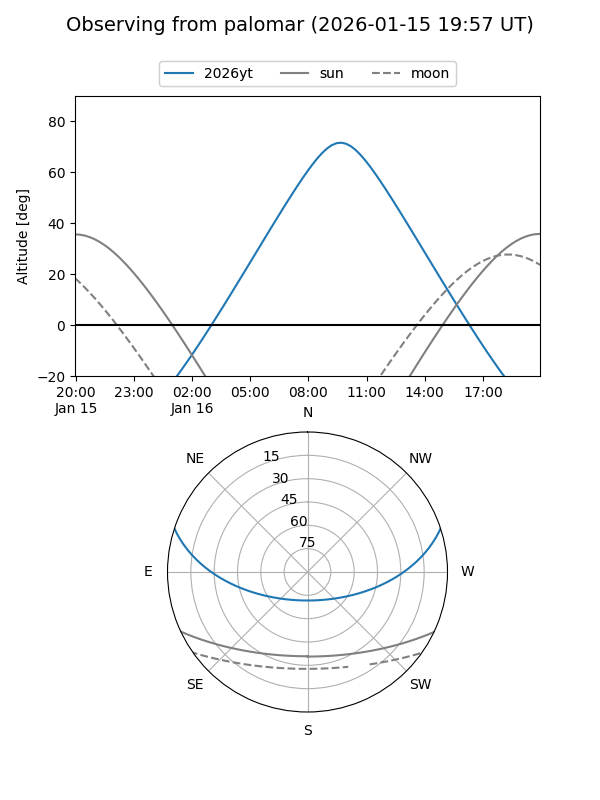
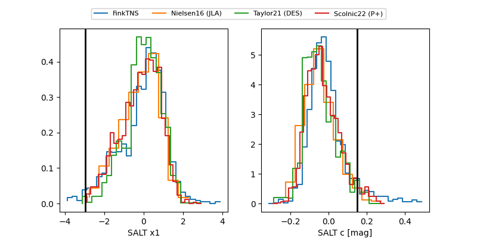

2026yt
Target 2026yt at 2026-01-25 09:21
Aliases and brokers:
FINK: link
Lasair: link
ALeRCE: link
TNS: link
YSE: link
alt names
ZTF26aaauepi (ztf,fink_ztf)
2026yt (tns,yse)
PS26ev (panstarrs)
Coordinates:
equatorial (ra, dec) = 143.4035,+15.14330
equatorial (HMS+DMS) = 09:33:36.84,+15:08:35.88
galactic (l, b) = (217.1125,+42.65252)
Flags:
Photometry:
last ztfg=20.04, ztfr=20.05
1 ztfg, 2 ztfr detections
Lightcurve

Visibility


Additional plots
